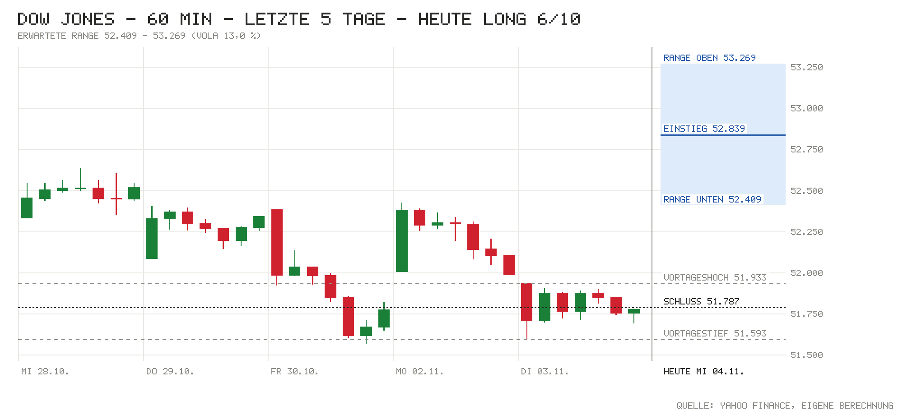

Tagesentscheidung ab 15:32 bis 22:00 Uhr
Der Dow hat den Wahlschock aus der Nacht nicht nur aufgeholt: Er eröffnete 1,2 % höher und steigt seitdem weiter (+2,0 %). Für Long sprechen die Breite des Anstiegs (alle Dow-Werte zusammen +1.090 Punkte), ein um 3 % fallender Ölpreis, ein schwächerer Dollar, die steigenden Anleihe-ETFs und Europa mit fast +2 %. Das wichtigste Gegenargument: Nach +1.050 Punkten seit gestern ist schon viel gelaufen, Gewinnmitnahmen sind jederzeit möglich. Zudem preist der Markt zu 79 % eine Zinserhöhung im Dezember ein.
- Einstieg (15:32)
- 52.839
- Erwartete Range
- 52.409 – 53.269
- Obergrenze · Gewinnmitnahme
- 53.162 (+323)
- Untergrenze · Idee widerlegt
- 52.581 (−258)
- Eingepreist (Tagesoption)
- ±0,82 %
Einstieg zum Kurs um 15:32, Ausstieg spätestens zum US-Schluss. Range = ±1 σ für die restliche Handelszeit aus der S&P-500-Tagesoption, auf den Dow umgerechnet (ca. 68 %). Keine Anlageberatung.
Chart

Signale
| Signal | Wirkung | Stand und Einordnung |
|---|---|---|
| Eröffnung & erste Minuten | Rückenwind | Eröffnung 52.410 (Lücke +1,2 %), jetzt 52.839 (+0,82 % seit Eröffnung). Das Tageshoch liegt nahe am aktuellen Kurs, die Lücke wird also nicht verkauft. |
| Schwergewichte heute | Rückenwind | Alle 30 Werte zusammen +1.090 Pkt. Am stärksten Microsoft (+146), Goldman (+135) und Sherwin-Williams (+127). Nur Caterpillar bremst deutlich (−152). |
| US-Daten heute | Neutral | ADP-Beschäftigung 86.000 vs. Prognose 67.000, Handelsbilanz −105,0 Mrd. vs. −107,9 Mrd. Gut für die Konjunktur, aber kein Argument für eine lockerere Fed. |
| Europa & Asien | Rückenwind | DAX +1,97 %, Euro Stoxx 50 +1,95 %. Über Nacht CSI 300 +2,31 %, Hang Seng +1,67 %, Nikkei aber −1,42 %. |
| Zinserwartung | Gegenwind | Fed am 9.12.: 79 % Wahrscheinlichkeit für eine Erhöhung um 25 Bp. Zielband 3,75–4,00 %. |
| Renditen | Neutral | US 2J 4,61 % (±0), 10J 4,93 % (−2 Bp.). Leicht rückläufig, aber hoch. |
| Kreditstress | Rückenwind | FRED n/v. HYG +0,42 %, LQD +0,31 %: Die Anleihe-ETFs steigen, kein Stress erkennbar. |
| Öl & Dollar | Rückenwind | WTI 93,03 USD (−3,18 %), Brent 100,30 USD (−3,19 %), EUR/USD 1,1263 (+0,63 %). Billigere Energie und ein schwächerer Dollar entlasten. |
| Trend | Rückenwind | 52.839 liegt wieder über dem 21-Tage-Schnitt (52.019), dem 50-Tage-Schnitt (52.153) und dem 200-Tage-Schnitt (50.630). |
| Positionierung | Neutral | COT 27.10.: Hedgefonds im S&P-Future netto −400.604 (−29.359). Diese Short-Positionen können den Anstieg durch Eindeckungen verstärken, eine Extremlage ist es nicht. |
| Unternehmensnachrichten | Rückenwind | McDonald’s mit 3,51 USD Gewinn je Aktie (Prognose 3,36). Amgen bereinigt mit 6,45 USD (+14 %). |
| Profi-Sicht | Neutral | ING sieht für US-Zinsen 2027 dreifachen Gegenwind. Das ist eine Zinssicht und sagt nichts direkt über Aktien heute. |
| Termine im Fenster | Neutral | 15:45 Einkaufsmanager, 16:00 ISM Dienste, 16:30 Öllager. Kein Fed-Entscheid. |
Dow-Werte heute
| Aktie | Heute | Beitrag |
|---|---|---|
| Caterpillar | −3,99 % | −152 Pkt. |
| Microsoft | +4,59 % | +146 Pkt. |
| Goldman Sachs | +2,47 % | +135 Pkt. |
| Sherwin-Williams | +6,10 % | +127 Pkt. |
| Amazon | +6,76 % | +103 Pkt. |
| Home Depot | +5,05 % | +103 Pkt. |
| Amgen | +3,11 % | +88 Pkt. |
| Apple | +4,02 % | +81 Pkt. |
| Summe aller 30 Werte | +1.090 Pkt. |
Beitrag = Kursänderung seit gestern ÷ Dow-Divisor (aus den Kursen berechnet, 0,16369). Laufende Kurse von Yahoo, bis zu 15 Minuten verzögert. Die Dow-Liste im Skript hat den Stand Nov. 2024.
Bilanz von gestern
Noch keine bewertete Entscheidung. Dies ist die erste US30-Ausgabe im neuen Format, die Bilanz beginnt mit den nächsten Läufen. Zur Einordnung: Die Short-Idee von gestern („unter 51.800“) lag zum Schluss knapp richtig, der Dow schloss bei 51.786,72 (−0,38 %).
Marktlage
| Markt | Stand | Veränderung |
|---|---|---|
| Dow Jones (Schluss 3.11.) | 51.786,72 | −0,38 % |
| Dow (Eröffnung heute) | 52.410,23 | +1,20 % |
| Dow (jetzt, Einstieg 15:32) | 52.839 | +2,03 % |
| S&P 500 | 7.660,91 | +1,22 % |
| Nasdaq 100 | 28.350,88 | +0,61 % |
| US-Futures (S&P / Nasdaq) | 7.690,75 / 28.457,25 | +1,24 % / +0,54 % |
| DAX (aktuell) | 26.373,61 | +1,97 % |
| Euro Stoxx 50 (aktuell) | 6.264,63 | +1,95 % |
| EUR/USD | 1,1263 | +0,63 % |
| WTI (USD/Barrel) | 93,03 | −3,18 % |
| Brent (USD/Barrel) | 100,30 | −3,19 % |
| Gold (USD/Unze) | 4.050,00 | +2,78 % |
| VIX | 17,92 | −13,97 % |
| VXD (Schluss 3.11.) | 18,46 | −1,81 % |
Die Wall Street wurde um 15:30 Uhr deutscher Zeit eröffnet, die Stände sind von 15:32 Uhr (Yahoo, bis 15 Min. verzögert). Ein fallender VIX bzw. VXD ist grün markiert, weil die Nervosität sinkt. Über Nacht waren die Futures nach dem Wahlergebnis zunächst eingebrochen (Nasdaq-100-Future zeitweise ca. −2,4 %), danach drehten sie deutlich ins Plus (CNBC, CNN, IBTimes).
Anleihen & Zinsen
| Kennzahl | Stand | Veränderung |
|---|---|---|
| US-Treasury 2J (live) | 4,61 % | ±0 Bp. |
| US-Treasury 10J (live) | 4,93 % | −2 Bp. |
| Fed nächste Sitzung (9.12.) | 79 % für +25 Bp. (impl. 4,08 %) | Erhöhung erwartet |
| Fed-Zielband | 3,75–4,00 % (EFFR 3,88 %) | zuletzt +25 Bp. am 17.9. |
| US-Hochzins (HYG, Ersatz) | 77,30 USD | +0,42 % heute |
| Investment Grade (LQD, Ersatz) | 104,04 USD | +0,31 % heute |
Die Risikoaufschläge von FRED lagen nicht vor, daher die Anleihe-ETFs HYG und LQD als Ersatz (nur Tagesveränderung, Wochenwert n/v). Die US-Kurve ist live von CNBC. Die offizielle Treasury-Kurve vom Vortag: 10J 4,95 %, vor einer Woche 4,99 %.
Termine heute (deutsche Zeit)
- vorbörslich McDonald’s (Dow): Zahlen Q3, 3,51 USD Gewinn je Aktie vs. Prognose 3,36
- 14:15 USA: ADP-Beschäftigung, Ist 86.000 vs. Prognose 67.000 (zuvor 86.000)
- 14:30 USA: Handelsbilanz, Ist −105,0 Mrd. USD vs. Prognose −107,9 Mrd.
- 15:30 Eröffnung der Wall Street
- 15:45 USA: S&P Global Einkaufsmanager Dienste, Prognose 57,9 (zuvor 58,8), Composite Prognose 57,6
- 16:00 USA: ISM Dienstleistungen, Prognose 54,8 (zuvor 54,9)
- 16:30 USA: EIA-Rohöllager, Prognose −1,7 Mio. Barrel
- 22:00 US-Börsenschluss. Keine Quartalszahlen von Dow-Werten nach Börsenschluss in den Daten.
Nachrichten zu Dow-Werten
- Markt / Midterms: Die Demokraten haben bei den Zwischenwahlen das Repräsentantenhaus und den Senat gewonnen. Die Futures fielen zunächst und drehten dann um mehr als 1.000 Punkte ins Plus. Das Ergebnis ist klar, und Trump erklärte, er sei „absolut bereit“, es zu akzeptieren. Laut Deutsche Bank bremst die neue Mehrheit extreme politische Entscheidungen. Einschätzung: positiv. Die Unsicherheit ist weg, und ein geteilter Kongress war historisch eher gut für Aktien. Technologiewerte hinken hinterher, weil die Demokraten die KI-Branche strenger prüfen dürften.
- Caterpillar: −4 %, mit −152 Punkten der größte Bremser. Eine eigene Meldung dazu gibt es nicht. Die Aktie hat seit dem Rekordhoch im Juni ca. 40 % verloren. Nach den Zahlen vom 29.10. fiel sie um ca. 9 %, weil Zölle die Kosten treiben. Einschätzung (ohne Quelle): Hier werden wohl Gewinne aus der KI- und Infrastruktur-Wette mitgenommen. Wird die Unterstützung bei ca. 625 USD klar unterschritten, belastet die Aktie weiter.
- McDonald’s: Im dritten Quartal 3,51 USD Gewinn je Aktie (+10 %, Prognose 3,36). Systemweite Umsätze +4 % auf über 38 Mrd. USD, flächenbereinigt weltweit +1,5 %, in den USA aber −0,2 %. Die Dividende steigt um 4 % auf 1,93 USD. Die Aktie steigt um 3,2 % (+51 Pkt.). Einschätzung: positiv. Der Gewinn liegt über der Prognose, das US-Geschäft bleibt aber schwach.
- Amgen: Zahlen von gestern Abend: Umsatz +8 % auf 10,4 Mrd. USD, bereinigter Gewinn je Aktie 6,45 USD (+14 %). Erwartet waren laut gestriger Notiz ca. 5,69–5,78 USD, die Flüsterschätzung lag bei 6,07 USD. Die Aktie steigt um 3,1 % (+88 Pkt.). Einschätzung: positiv, auch die hohe Flüsterschätzung wurde klar übertroffen.
- Microsoft, Amazon, Apple: Die Schwergewichte erholen sich kräftig (+4,6 % / +6,8 % / +4,0 %). Apple macht damit den Rückschlag nach dem schwachen Margenausblick fast wett. Einschätzung: positiv für den Dow. Aus den Quellen geht aber kein eigener Auslöser hervor, die Erholung kommt mit dem Gesamtmarkt.
Profi-Sicht & Positionierung
- ING THINK: Der Ausblick „US rates and a triple whammy of obstacles to overcome“ sieht für US-Zinsen 2027 drei Hürden. Aus dem Titel lässt sich ableiten, dass die Renditen nicht leicht fallen werden (der Artikel war nicht abrufbar). Dazu passt eine weitere ING-Notiz: Zuletzt verlangten Anleger bei mehreren Treasury-Auktionen höhere Renditen als erwartet. ING liest das als Unbehagen über das Zinsniveau, nicht als Sorge um die Kreditwürdigkeit.
- Positionierung (COT, Stand 27.10.): Hedgefonds sind im S&P-Future netto mit −400.604 Kontrakten short (−29.359 zur Vorwoche), Vermögensverwalter netto mit +923.449 long. Die Short-Position der Hedgefonds hat sich ausgeweitet. Bei einer Erleichterungsrally wie heute kann sie durch Eindeckungen den Anstieg verstärken. In der 10-jährigen Treasury sind Hedgefonds netto −2,23 Mio. Kontrakte short.
Quellen
- Marktdaten (Skript
marktdaten.mjs): Yahoo Finance (Kurse, Dow-Werte, VXD), Nasdaq (Kalender, Optionskette SPY), CNBC (US-Kurve), Bundesbank, U.S. Treasury, CME-Fed-Pfad über Amber Terminal, CFTC (COT), ING THINK - CNBC: Dow rallies 1,000 points as political risk eases after Democratic victory (Live)
- CNN: Dow futures jump by 1,100 points as Democrats take control of Congress
- IBTimes: Wall Street futures plunged after Democrats swept Congress, then investors started buying
- McDonald’s: 8-K, Zahlen Q3 2026
- Amgen: 8-K, Zahlen Q3 2026
- Yahoo Finance: Caterpillar, the Dow’s best stock of 2026, is unraveling
- Benzinga: Caterpillar – Zölle trüben die Zahlen (29.10.)
- ING THINK: US rates and a triple whammy of obstacles to overcome